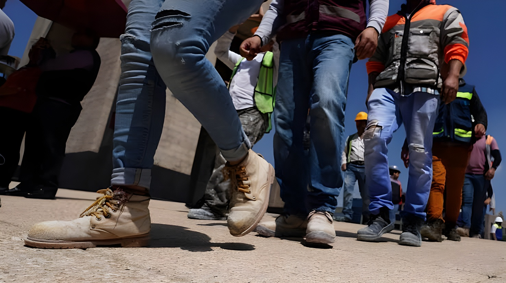

Le samedi 19 septembre 2026, à midi (heure de Mexico), les haut-parleurs d'alerte sismique ont retenti et les téléphones portables ont sonné dans tout le pays : le Mexique a mené son deuxième « Simulacro Nacional » de l'année, 41 ans après le séisme de 1985 et 9 ans après celui de 2017, tous deux survenus un 19 septembre. Selon le Secrétariat à la Sécurité et à la Protection citoyenne (SSPC), 33 millions de personnes y ont pris part. Cette édition innove à deux titres : c'est la première fois que l'exercice se tient un samedi, afin d'inciter les familles à répéter l'évacuation depuis leur domicile, et la première fois qu'il repose sur cinq scénarios régionaux au lieu d'un séisme unique pour tout le territoire.
Le rendez-vous annuel de la mi-septembre commémore le séisme du 19 septembre 1985 : de magnitude 8,1, il a frappé au petit matin au large des côtes du Michoacán, à environ 400 kilomètres de la capitale. Il s'agit d'un séisme de subduction, lié à l'interaction entre les plaques de Cocos et nord-américaine, dont les ondes ont été amplifiées par le sol lacustre de Mexico. Le bilan officiel avoisine 6 000 morts, mais les estimations divergent fortement : les autorités reconnaissaient initialement entre 6 000 et 7 000 décès, tandis que la CEPALC en comptait 26 000 et des organisations de sinistrés jusqu'à 35 000. Une réplique de magnitude 7,6, le 20 septembre, a provoqué l'effondrement de certaines structures déjà endommagées.
Trente-deux ans plus tard, le 19 septembre 2017 à 13 h 14, un séisme de magnitude 7,1 a eu pour épicentre une zone située à 12 kilomètres au sud-est d'Axochiapan (Morelos), à la limite de l'État de Puebla. Cette fois, il s'agissait d'un séisme intraplaque, survenu à faible distance de la capitale, ce qui a réduit le temps d'alerte. Il a fait 369 morts (228 à Mexico, 74 dans le Morelos, 45 à Puebla, 15 dans l'État de Mexico, 6 dans le Guerrero et 1 à Oaxaca), quelques heures après les exercices organisés en mémoire de 1985. Les experts rappellent que cette coïncidence de date ne permet en rien de prédire les séismes.
Séisme de magnitude 8,1 au large du Michoacán ; environ 6 000 morts selon le bilan officiel, des estimations bien supérieures selon d'autres sources.
Une réplique de magnitude 7,6 aggrave les dégâts dans la capitale.
Séisme de magnitude 7,1 près d'Axochiapan (Morelos) : 369 morts, dont 228 à Mexico.
Premier Simulacro Nacional de l'année : plus de 37 millions de participants dans 2 421 municipalités.
Second Simulacro Nacional, à midi, pour la première fois un samedi et avec cinq scénarios régionaux.
Le premier exercice de 2026 s'était tenu le 6 mai, avec plus de 37 millions de participants dans 2 421 municipalités, dont 8 610 519 personnes à Mexico. Le second, en septembre, a réuni 33 millions de personnes selon la SSPC. Les exercices précédents avaient surtout lieu en semaine et en journée de travail, si bien que de nombreux salariés savent déjà réagir sur leur lieu d'activité ; le choix du samedi visait à combler un angle mort, les protocoles à la maison, avec un « plan familial » qui tienne compte des enfants, des personnes handicapées, des personnes âgées et même des animaux de compagnie.
À la différence des éditions précédentes, la Coordination nationale de protection civile (CNPC), dirigée par Laura Velázquez Alzúa, n'a pas retenu un séisme unique. Elle a défini cinq hypothèses régionales, calquées sur les risques de chaque zone. Le scénario principal concerne le Centre : un séisme de magnitude 7,7 à environ 15 kilomètres au sud-sud-ouest de Tehuacán (Puebla), à 67 kilomètres de profondeur, impliquant 14 entités dont Mexico. Les autorités le présentent comme physiquement possible en raison de l'interaction de la plaque de Cocos, et comme l'un des scénarios les plus préoccupants pour la capitale, du fait de l'amplification des ondes sur sol mou et d'un temps d'alerte réduit. Ces magnitudes et épicentres sont de simples hypothèses de travail, et non une prévision.
| Région | Magnitude | Épicentre fictif |
|---|---|---|
| Centre | 7,7 | Tehuacán (Puebla) |
| Nord-Ouest | 7,1 | Mexicali (Basse-Californie) |
| Nord-Est | 5,2 | Ciudad Allende (Nuevo León) |
| Péninsule du Yucatán | 7,0 | Cabo Catoche (Quintana Roo) |
| Golfe de Tehuantepec | 7,6 | Tonalá (Chiapas) |
À 12 heures précises, environ 23 000 haut-parleurs d'alerte sismique, installés surtout dans les États du littoral pacifique et du centre du pays, se sont déclenchés, tandis qu'un message d'alerte était diffusé sur les téléphones portables compatibles, annoncés à plus de 80 millions. Le Mexique se présente comme le troisième pays du continent américain doté d'un tel système de diffusion par téléphonie mobile. La présidente Claudia Sheinbaum a refusé de modifier le son de l'alerte pour préciser qu'il s'agissait d'un exercice : après consultation d'experts, le choix a été fait de reproduire à l'identique la sonnerie réelle, afin que la population s'y habitue. À l'issue de l'exercice, l'Agence de transformation numérique et des télécommunications (ATDT) a indiqué que le signal avait été émis par 96,5 % des antennes du territoire, selon les rapports des opérateurs.
Le matin même, à 7 h 19, Claudia Sheinbaum avait présidé au Zócalo la cérémonie de mise en berne du drapeau en mémoire des victimes de 1985 et de 2017 ; elle a ensuite suivi l'exercice depuis Chihuahua, où elle se trouvait en déplacement. Quelques minutes après l'alerte, le Comité national d'urgence s'est réuni au siège de la SSPC sous la direction d'Omar García Harfuch, avec 21 gouverneurs connectés à distance. La SSPC a évalué la réponse d'une force d'intervention de 2 589 889 personnes, 63 575 véhicules, 371 aéronefs, 40 691 unités médicales et 200 883 lits disponibles.
Du drapeau en berne au Zócalo aux sonneries qui retentissent simultanément sur des dizaines de millions de téléphones, le Simulacro Nacional montre comment un traumatisme fondateur s'est transformé en réflexe institutionnel et collectif. Les autorités affirment que le pays est mieux préparé qu'en 1985, quarante ans après la création du Système national de protection civile, et l'exercice de 2026 déplace désormais l'attention vers l'espace domestique. Reste que la simulation ne remplace pas l'épreuve du réel : c'est à la prochaine secousse, et non lors d'un samedi de répétition, que se mesurera la solidité de ce dispositif.
El sábado 19 de septiembre de 2026, a las 12:00 horas (tiempo del centro de México), sonaron los altavoces de la alerta sísmica y los teléfonos celulares en todo el país: México realizó su segundo Simulacro Nacional del año, a 41 años del sismo de 1985 y a 9 del de 2017, ambos ocurridos un 19 de septiembre. Según la Secretaría de Seguridad y Protección Ciudadana (SSPC), participaron 33 millones de personas. La edición de este año innova en dos aspectos: es la primera vez que el ejercicio se realiza en sábado, para que las familias practiquen la evacuación desde sus hogares, y la primera vez que se basa en cinco escenarios regionales en lugar de un solo sismo para todo el territorio.
La cita anual de mediados de septiembre conmemora el sismo del 19 de septiembre de 1985: de magnitud 8.1, sacudió por la mañana la costa de Michoacán, a unos 400 kilómetros de la capital. Fue un sismo de subducción, vinculado a la interacción entre las placas de Cocos y Norteamericana, cuyas ondas fueron amplificadas por el suelo lacustre de la Ciudad de México. El balance oficial ronda las 6 mil personas fallecidas, aunque las estimaciones difieren mucho: el Gobierno reconoció inicialmente entre 6 y 7 mil muertes, mientras que la CEPAL contabilizó 26 mil y organizaciones de damnificados hasta 35 mil. Una réplica de magnitud 7.6, el 20 de septiembre, provocó el colapso de estructuras ya dañadas.
Treinta y dos años después, el 19 de septiembre de 2017 a las 13:14 horas, un sismo de magnitud 7.1 tuvo su epicentro a 12 kilómetros al sureste de Axochiapan, Morelos, en el límite con Puebla. En esta ocasión se trató de un sismo intraplaca, ocurrido mucho más cerca de la capital, lo que redujo el tiempo de aviso. Dejó 369 fallecidos (228 en la Ciudad de México, 74 en Morelos, 45 en Puebla, 15 en el Estado de México, 6 en Guerrero y 1 en Oaxaca), pocas horas después de los simulacros en memoria de 1985. Los expertos recuerdan que la coincidencia de fecha no permite predecir sismos.
Sismo de magnitud 8.1 frente a las costas de Michoacán; unos 6 mil muertos según el balance oficial, con estimaciones muy superiores según otras fuentes.
Una réplica de magnitud 7.6 agrava los daños en la capital.
Sismo de magnitud 7.1 cerca de Axochiapan (Morelos): 369 muertos, 228 de ellos en la Ciudad de México.
Primer Simulacro Nacional del año: más de 37 millones de participantes en 2 421 municipios.
Segundo Simulacro Nacional, al mediodía, por primera vez en sábado y con cinco escenarios regionales.
El primer ejercicio de 2026 se realizó el 6 de mayo, con más de 37 millones de participantes en 2 421 municipios, entre ellos 8 610 519 personas en la Ciudad de México. El segundo, en septiembre, reunió a 33 millones de personas según la SSPC. Los simulacros anteriores se hacían sobre todo en días y horarios laborales, por lo que muchos trabajadores ya saben cómo actuar en su centro de trabajo; la elección del sábado buscaba cubrir un punto ciego, los protocolos en casa, con un «plan familiar» que considere a niñas y niños, personas con discapacidad, adultos mayores e incluso mascotas.
A diferencia de ediciones anteriores, la Coordinación Nacional de Protección Civil (CNPC), encabezada por Laura Velázquez Alzúa, no planteó un único sismo. Definió cinco hipótesis regionales, ajustadas a los riesgos de cada zona. El escenario principal corresponde a la región Centro: un sismo de magnitud 7.7 a unos 15 kilómetros al sur-suroeste de Tehuacán (Puebla), a 67 kilómetros de profundidad, que involucró a 14 entidades, entre ellas la Ciudad de México. Las autoridades lo presentan como físicamente posible por la interacción de la placa de Cocos, y como uno de los escenarios que más preocupan a la capital, por la amplificación de las ondas en suelo blando y el menor tiempo de anticipación de la alerta. Estas magnitudes y epicentros son simples hipótesis de trabajo, no un pronóstico.
| Región | Magnitud | Epicentro ficticio |
|---|---|---|
| Centro | 7.7 | Tehuacán (Puebla) |
| Noroeste | 7.1 | Mexicali (Baja California) |
| Noreste | 5.2 | Ciudad Allende (Nuevo León) |
| Península de Yucatán | 7.0 | Cabo Catoche (Quintana Roo) |
| Golfo de Tehuantepec | 7.6 | Tonalá (Chiapas) |
A las 12:00 en punto se activaron unos 23 mil altavoces de alerta sísmica, instalados sobre todo en los estados del litoral del Pacífico y del centro del país, mientras un mensaje de alerta llegaba a los teléfonos móviles compatibles, anunciados en más de 80 millones. México se presenta como el tercer país del continente americano con un sistema de alertamiento por telefonía celular. La presidenta Claudia Sheinbaum rechazó modificar el audio de la alerta para precisar que se trataba de un simulacro: tras consultar con expertos, se decidió reproducir el mismo sonido real para que la población se acostumbre. Al concluir el ejercicio, la Agencia de Transformación Digital y Telecomunicaciones (ATDT) informó que la señal se emitió en el 96.5 % de las antenas del territorio, según los reportes de las operadoras.
Esa misma mañana, a las 7:19 horas, Claudia Sheinbaum encabezó en el Zócalo el izamiento de la Bandera Nacional a media asta en memoria de las víctimas de 1985 y 2017; después siguió el ejercicio desde Chihuahua, donde se encontraba de visita. Minutos después de la alerta se instaló el Comité Nacional de Emergencias en la sede de la SSPC, bajo la dirección de Omar García Harfuch, con 21 gobernadores conectados de manera virtual. La SSPC evaluó la respuesta de una fuerza de tarea de 2 millones 589 mil 889 personas, 63 mil 575 vehículos, 371 aeronaves, 40 mil 691 unidades médicas y 200 mil 883 camas disponibles.
Del izamiento de la bandera en el Zócalo a las alertas que suenan al mismo tiempo en decenas de millones de teléfonos, el Simulacro Nacional muestra cómo un trauma fundacional se convirtió en reflejo institucional y colectivo. Las autoridades sostienen que el país está mejor preparado que en 1985, a cuarenta años de la creación del Sistema Nacional de Protección Civil, y el ejercicio de 2026 desplaza la atención hacia el espacio doméstico. Sin embargo, un simulacro no sustituye la prueba de la realidad: será en el próximo temblor, y no en un sábado de ensayo, cuando se mida la solidez de este dispositivo.